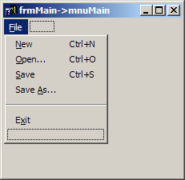

Session 2
Actions, menus, toolbars, image lists, file dialogs
This session's main topic was to present Actions and see how they are connected to user-interface
elements (e.g. menu items). I built a small text editor (like Notepad) to demonstrate this topic. The name of
the project is TextEdit and you can download all of the project/source files here.
(XE 3 version here)
There's a project file included (TextEdit.bdsproj). Just double-click on that and Turbo C++ or RAD Studio should fire up and load the
project. You can then build and run the application.
- TextEdit.cpp - This is where WinMain resides (This file will usually look very similar in all VCL applications.)
- MainForm.h - The definition of the main window.
- MainForm.cpp - The implementation of the main window.
- MainForm.dfm - The resource file for the main window. This file was built and managed by the IDE.
You should browse through it for a few minutes to see how the components' information is stored in the file.
The project contains more code than I demonstrated because I didn't have enough time to implement all of it. I don't necessarily want to show
every single line of code during the session, since most of it is repetitive. I also don't have the toolbar or images (menus/tool buttons) implemented
in this project. (That's an exercise for you.) I'm including a folder with the bitmaps that I used for the images.
You can download the executable and try it yourself.
You should load the project into the IDE and run it.
The code should be easy to follow. Most of the added code pertains to making sure that changes made to a file are
not accidentally discarded. This can happen, for example, if the user changes a file and then chooses File | New
from the menu. The application must ask the user if the modified file should be saved before discarding the
current file. There is a variable named Dirty_ which keeps track of the state of the text. This is how the rest of
the code knows that the file has been modified. There are still things that need to be fixed before moving on (and are exercises for the reader).
Some screenshots of the project at design time:
| The Form at Design Time | ActionList Editor | Menu Designer | Panels Editor |
|---|
|
|
|

|
|
| The application showing some information | Some components used to build the application |
|---|
|
|
|
| The main menu with images and hints (in the status bar) | A toolbar with images and tool tips |
|---|
|
|
|
- Add a toolbar (TToolBar) to the application with buttons for each of the 5 menu items.
(The image on the right above shows the toolbar.)
- Create an image list (TImageList) and add the 5 images. Associate the image list with the actions, toolbar, and main menu.
- If the file has been modified and the user exits the application, no prompting is done and the changes
are lost. Very bad! (Hint: TForm has an event called OnCloseQuery
that gives the form a chance to do something before closing.)
- The File Open/Save dialog boxes allow the user to type in an invalid filename. This should be prevented. (Hint: this
is an option in the dialogs)
- The position of the caret is only updated when a key is pressed. It doesn't get updated if you click the
mouse in the TMemo or load a new file.
- Other things as well...